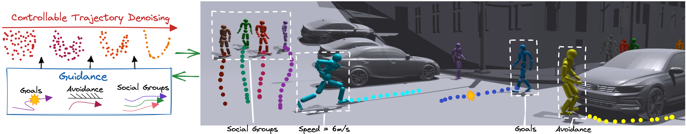

{{ page.title }}
Conference on Computer Vision and Pattern Recognition (CVPR 2023)
Davis Rempe (1, 2) Zhengyi Luo (1, 3) Xue Bin Peng (1, 4) Ye Yuan (1) Kris Kitani (3) Karsten Kreis (1) Sanja Fidler (1, 5, 6) Or Litany (1)
(1) NVIDIA (2) Stanford University (3) Carnegie Mellon University (4) Simon Fraser University (5) University of Toronto (6) Vector Institute

|
Abstract
We introduce a method for generating realistic pedestrian trajectories
and full-body animations that can be controlled to meet user-defined
goals. We draw on recent advances in guided diffusion modeling to
achieve test-time controllability of trajectories, which is normally
only associated with rule-based systems. Our guided diffusion model
allows users to constrain trajectories through target waypoints, speed,
and specified social groups while accounting for the surrounding
environment context. This trajectory diffusion model is integrated
with a novel physics-based humanoid controller to form a closed-loop,
full-body pedestrian animation system capable of placing large crowds
in a simulated environment with varying terrains. We further propose
utilizing the value function learned during RL training of the
animation controller to guide diffusion to produce trajectories better
suited for particular scenarios such as collision avoidance and
traversing uneven terrain
|
Paper: [PDF] Webpage: [Link] Preprint: [arXiv]
|
Bibtex
@inproceedings{
rempeluo2023tracepace,
author={Rempe, Davis and Luo, Zhengyi and Peng, Xue Bin and Yuan, Ye and Kitani, Kris and Kreis, Karsten and Fidler, Sanja and Litany, Or},
title={Trace and Pace: Controllable Pedestrian Animation via Guided Trajectory Diffusion},
booktitle={Conference on Computer Vision and Pattern Recognition (CVPR)},
year={2023}
}